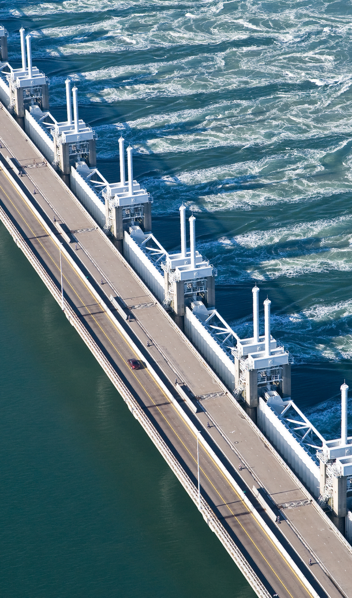
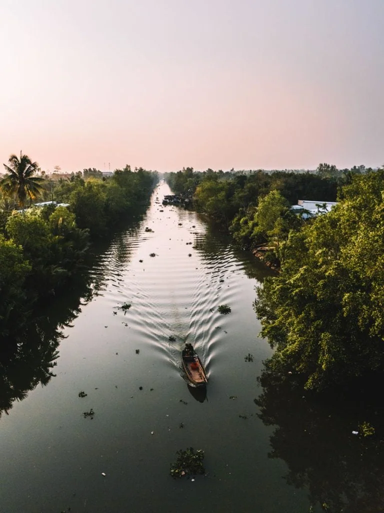
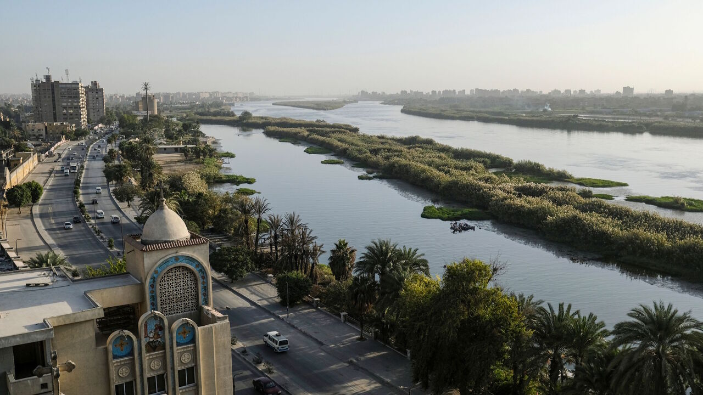

Rijn-Maas-Schelde
De Rijn-Maas-Schelde delta is een van de dichtstbevolkte delta's ter wereld. Nederland heeft eeuwenlang gevochten tegen het water en is uitgegroeid tot een wereldleider in waterbeheer en deltamanagement.

Mekong
De Mekong delta in Vietnam is de rijstschuur van Zuidoost-Azië. Stijgende zeespiegels, bodemdaling en stuwdammen stroomopwaarts bedreigen deze vruchtbare delta en de miljoenen mensen die er van afhankelijk zijn.

Nijl
De Nijl delta in Egypte voorziet in het levensonderhoud van tientallen miljoenen mensen. De bouw van de Aswan-dam heeft de sedimentaanvoer drastisch verminderd, waardoor de delta inkrimpt en gevoeliger wordt voor overstromingen.